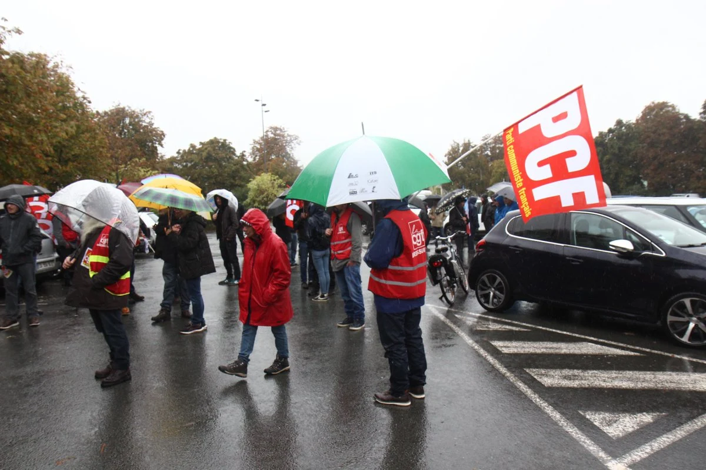

Publication sur X
1er octobre 2024. Salaires, pensions et services publics dans les Deux-Sèvres
Date de publication sur X · 1 octobre 2024
Repères éditoriaux
Nous nous sommes mobilisés pour les salaires, les pensions et les services publics, ainsi que pour l’abrogation des réformes des retraites et de l’assurance chômage.
Texte de la publication sur X
#1erOctobre en #DeuxSèvres pour
l'augmentation des salaires et des pensions, pour l'abrogation de la réforme des retraites et celle de l'assurance chômage, et plus de moyens pour les services publics.
#Niort #Bressuire https://t.co/Gq91yPJdfD

Sources
PCF 79 · @79Parti sur X · AR-0005-TW-1841206517556498907
À lire aussi · Le 23 avril à Niort, une nouvelle mobilisation contre la réforme de l’assurance chômage
Publications associées
- Le 1er octobre en Deux-Sèvres, mobilisation pour les salaires et les retraites · Compte rendu Facebook du 1er octobre
- Contre l’austérité du gouvernement Barnier, mobilisons-nous · Appels et compte rendu de l’automne 2024
- 1er octobre. Rendez-vous à Niort, Thouars et Bressuire · Appels et compte rendu de l’automne 2024